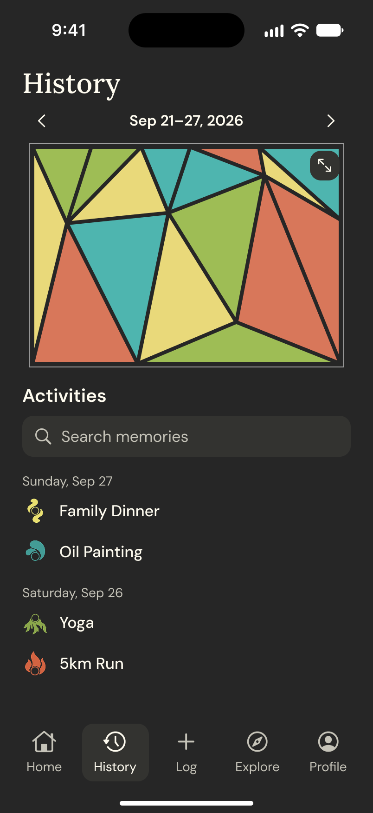
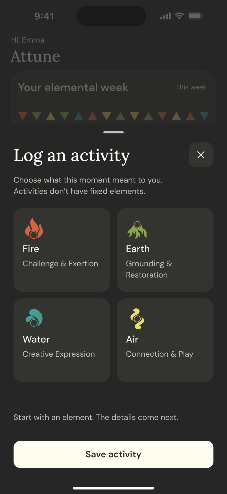
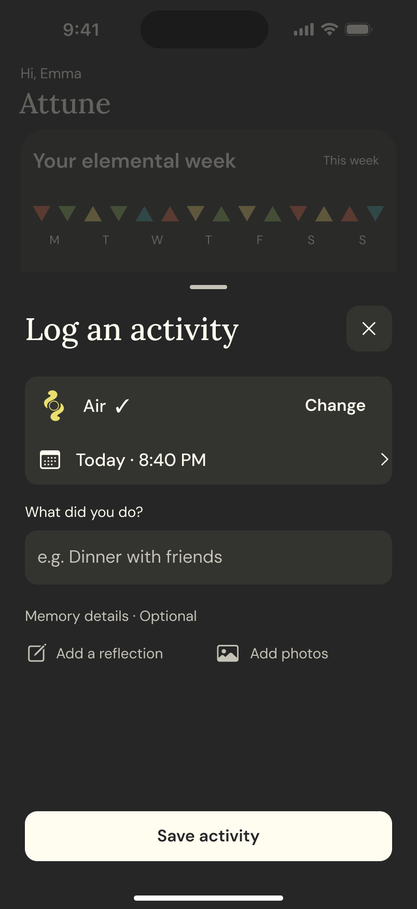
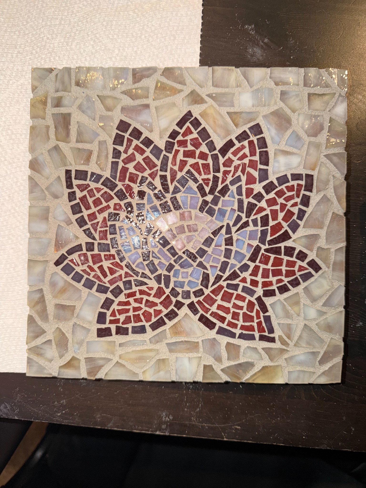
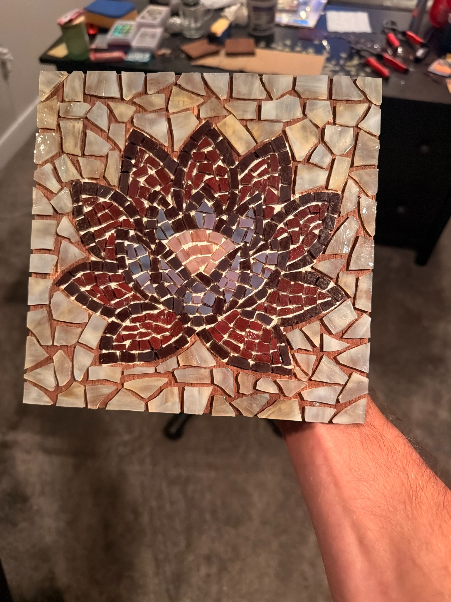

Product design · Fall 2026
Capstone in progress
Attune
Making room for a
meaningful week.
A mobile app for discovering activities, reflecting on experiences, and seeing the week through four elements. My partner and I are refining the experience throughout our capstone course.
See the latest designsThe latest iteration / November 2026
A moment logged.
A week remembered.
The current History and logging screens bring the mosaic into a fuller mobile experience. These are working designs, not final screens: the flow and interface continue to evolve through the capstone.






Work in progress · Screens shown are current capstone prototypes, not a shipped or final product. Select a screen to view it in detail.
The design question
How can a week of small experiences become something worth revisiting?
Attune is designed for young adults in college and early careers. The aim is to make space for challenge, restoration, creativity, and connection through activity discovery and reflection.
01 / Organizing the experience
Four elements,
four kinds of activity.
The elements give different experiences a shared language. Each has its own symbol and color, while the repeated circle keeps the family connected.
- Fire
- Challenge & exertion
- Earth
- Grounding & restoration
- Water
- Creative expression
- Air
- Connection & play
One family, different contrast
A shared shape.
A consistent color system.
The repeated circle connects the four symbols. The current Figma color variables use a shared set of warm, muted element colors across cream and charcoal surfaces.
The early survey compared six identity and background options without a consensus. The palette below reflects the color system we have since established for the current designs.
02 / Giving reflection a form
From cut glass
to a weekly memory.
In summer 2026, I spent more than 20 hours sourcing, cutting, and assembling glass into a lotus mosaic. That process inspired Attune’s weekly history: individual experiences forming a larger composition.




A personal making practice became a way to think about remembering.
The proposed interaction
One activity.
One piece of the week.
Each logged activity becomes an element-colored tile. The interaction study lets you choose an element, log an activity, inspect its tile, and undo changes. It demonstrates one part of the broader History and logging experience shown above.
Tile size has no quantitative meaning. It does not represent time, effort, frequency, or importance.
- 01Log an activity
Connect an experience to an element.
- 02Add to the weekly mosaic
One activity becomes one tile.
- 03Revisit the memory
Open the tile to return to its reflection.
Working interaction study
Try a week taking shape.
Choose an element, name a moment, and watch it join the week. Or load a sample mosaic to explore. Each new activity splits the largest piece; Undo restores the previous composition. This is a focused interaction study, not the full mobile app.
Your entries stay in this browser. Tile size does not represent effort or achievement. The mosaic uses the current Figma colors and a fixed Frosted finish; its appearance controls are intentionally removed.
Concept survey / October 1–6
Promising appeal.
An open clarity question.
25/34
numeric responses rated mosaic appeal 4–5 out of 5.
One additional response was unsure.
24/35
responses rated its usefulness for revisiting memories 4–5 out of 5.
Responses also associated tile size with time, frequency, or importance. That tension needs testing: the visual should invite reflection without implying a score. These are concept reactions, not evidence of successful use or improved wellbeing.
03 / Helping people find an activity
A clearer view
of personal interests.
The survey compared swiping through suggestions with selecting interests from a visible set. Interest tiles were preferred in 20 of 35 responses, informing the move toward showing interests together rather than one at a time.
Early lo-fi alternatives
Sequential or side by side?
The card deck asks people to consider one interest at a time. The grid keeps options visible together, with selections that can be compared before continuing.
These wireframes test the direction of Explore. They are early concept work, not the final visual design.
Concept preference · October 1–6 · 35 responses
From preference to iteration.
I replaced the sequential selection with visible interest tiles so people could see their choices together. Subsequent user testing helped refine the Explore page, with minimal improvement feedback in its final testing round.
The chart records the earlier concept survey. It is not a measured usability improvement or a final product outcome.